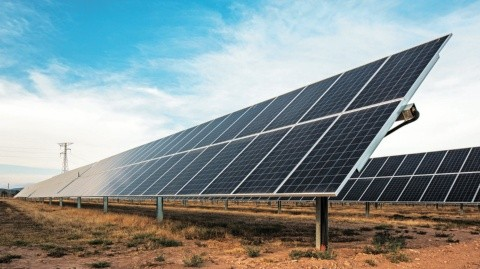
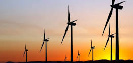

Home Page
Misión
La misión que se tiene con estas propuestas es reducir el impacto que tienen las energías no renovables en el mundo.
Visión
La visión que se tiene al cumplir estas propuestas es concientizar a la gente para que así el cambio se desarrolle de una manera mucho más fácil, además de la visión principal que es lograr este cambio que es introducir las energías renovables en todas partes.
Objetivos
Los objetivos son muy claros, estos son: Hacer que el calentaiento global reduzca considerablemente y reducir los costos de la energía, para que todas las familias puedan vivir de una mejor manera.

Gasto de Energía
Para resolver esta problemática es necesario recurrir a otras fuentes de energía, estas fuentes de energía son las fuenetes renovables. Las energías renovables son aquellas que provienen de fuentes naturales e inagotables como el viento, el sol o el agua.
Propuestas
En la primera propuesta se va a optar por usar paneles solares, ya que la energía solar no emite gases de efecto invernadero por lo que no contribuye al calentamiento global. Además esta energía es inagotable y renovale, genera más potencia gracias a irradiación solar, ahorra hasta un 90% en el costo de la luz y son de muy fácil manetnimiento.
Otra propuesta para el manejo de ahorro de energía y promover el uso de energía sustentable puede ser la energía del eólica, la cual consiste en convertir la energía que produce el movimiento de las palas de un aerogenerador impulsadas por el viento en energía eléctrica. Estoy implementado en varios lugares europeos y de primer mundo. En México también se podrá implementar esto usando el dinero de manera útil y servible.
